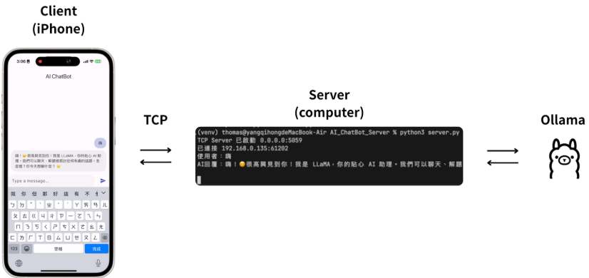
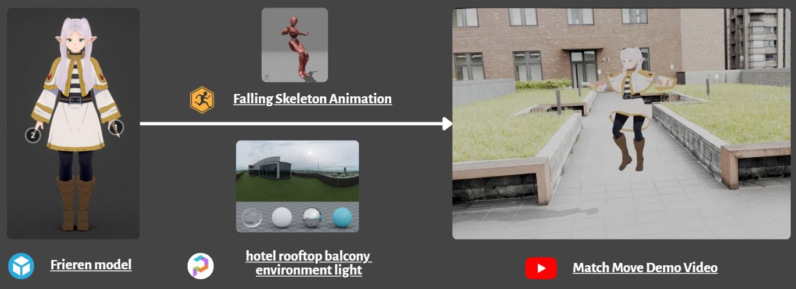

Digital products
Software Engineering
Mobile applications, networked services, blockchain integrations, and user-facing product experiences.
Computer Science × Electrical Engineering
I connect sensing hardware, AI models, software systems, and interface design to turn technical ideas into working products.
Digital products
Mobile applications, networked services, blockchain integrations, and user-facing product experiences.
Physical computing
Sensor integration, hardware prototyping, edge platforms, and intelligent systems that interact with the physical world.
Pixels & geometry
Real-time rendering, image processing, shaders, lighting, computer vision, and multimedia production.
Core discipline
Product-focused applications, connected services, and software systems built around real user flows.
Flutter · Mobile UX · Travel Discovery
A map-based mobile experience that helps travelers discover destinations through visual exploration and swipeable recommendations.
Read project →Other software projects
A marketplace for issuing, verifying, tracking, and transferring NFT-backed software licenses.
Read project →
iPhone client, TCP server, and a locally hosted Ollama model.
Read project →LINE Bot integrating market-data services and AI APIs.
Read project →Core discipline
Sensing hardware, edge platforms, and intelligent physical systems designed as complete products.
Embedded AI · Wearable · Sensing
A wearable system combining IMU and optical sensing, edge intelligence, movement analysis, and real-time mobile feedback.
Read project →Other hardware projects
Core discipline
Rendering, image processing, computer vision, and multimedia work that turns computation into visual output.
C++ · OpenGL · Rendering
A custom rendering pipeline covering OBJ loading, mesh construction, shaders, materials, lighting, and texturing.
Read project →Other visual projects
CNN-based image classification and evaluation.
Read project →Scaling, contrast, Gaussian blur, and Sobel filtering.
Read project →
3D character integration with live-action footage.
Read project →Part-time IT support
President
Student representative
I study Computer Science at National Taipei University and pursue a second major in Electrical Engineering.
My work moves between product ideas, sensing hardware, data processing, AI models, and interface design. I am most interested in roles where software and the physical world meet.
Honorable Mention
3rd Place
Let’s connect